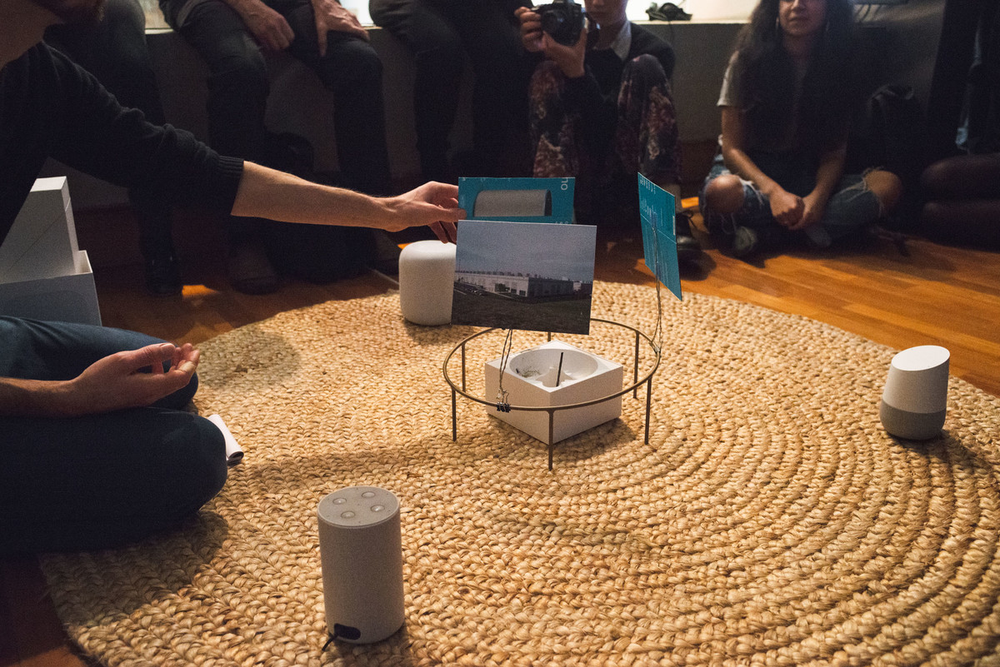
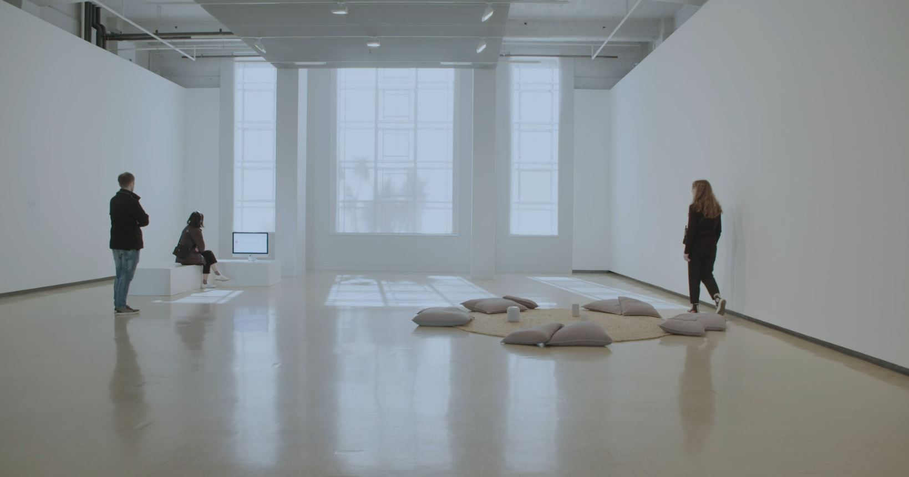
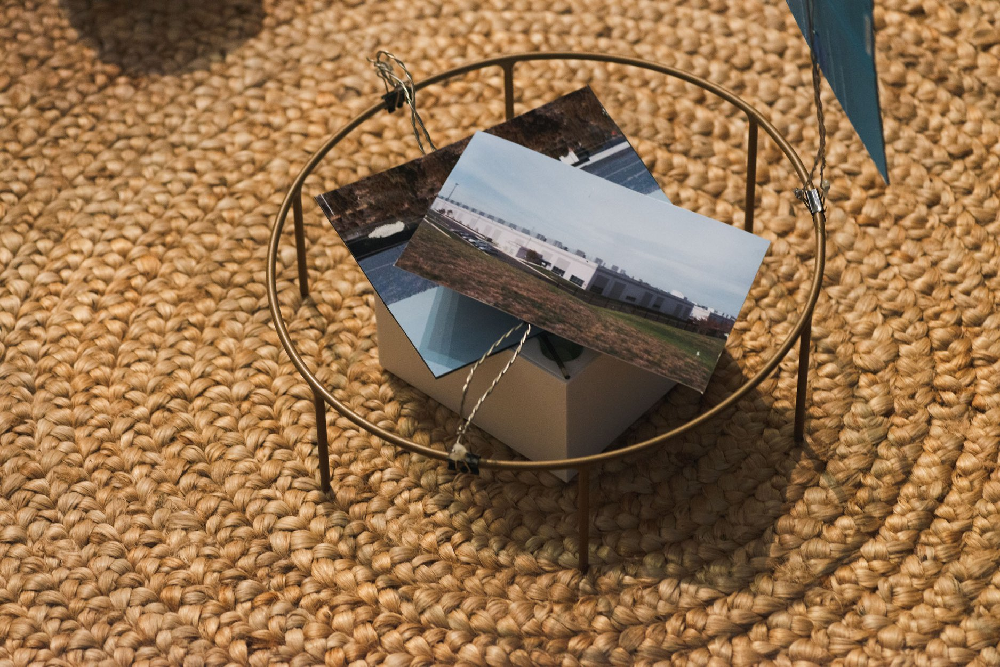
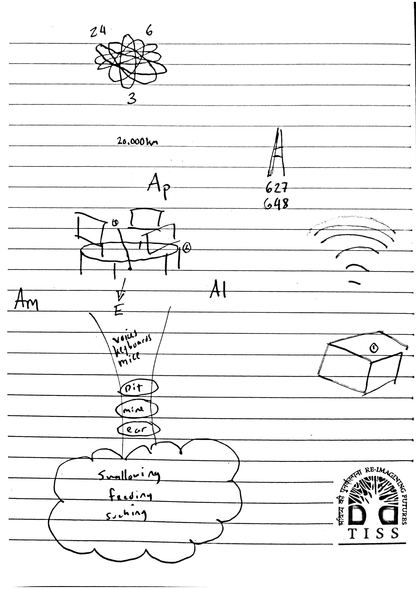

Always Learning
| Date: | 2018 |
| Format: | 3-channel sound installation, 30min |

Performance in Always Learning, Ian Potter Museum of Art, curated by Liquid Architecture, 2018.
Description
Always Learning stages an increasingly reflexive conversation between three devices – an Amazon Echo, a Google Home Assistant, and an Apple Homepod – and invites us to consider the possible philosophical, moral and political implications of autonomic computing, the rise of voice operation and our increasing comfort levels with devices that listen by default. Electronic personal assistants are just the kindergarten for a vast corporate listening apparatus – an algorithmic ‘panacousticon’ – the effects of which we should not expect to be benign.
This work was commissioned for Eavesdropping, a project curated by James Parker and Joel Stern at Ian Potter Museum of Art, Melbourne Australia. It contributed to the formation of Machine Listening with both James and Joel.
Excerpts
In the installation, each device speaks with its 'own' voice. (I am using scare quotes because I did have to modify the devices to do this.) There are several pre-scripted scenes, but the devices also function as they normally do, relaying prompts (eg. "Alexa, have you ever witnessed a crime?") to the cloud and responding with whatever their corporate conversational programming tells them to say. In this way, the installation drifts between two different kinds of scripting. Below are two 1 minute excerpts of the recorded audio:
Exhibitions
- Eavesdropping, Ian Potter Museum of Art, Melbourne, VIC, 2018
- Digital Citizens Conference, Melbourne Law School, VIC, 2019
- Eavesdropping, City Gallery, Wellington, NZ, 2019
- Don’t Be Evil, University of Queensland Art Museum, QLD, 2021-2022
Presentations
- Ian Potter Museum in collaboration with Liquid Architecture, 2018.
- Unsound Machine Listening Ep 1: Against The Coming World of Listening Machines, 2020.
Review
- *Eavesdropping: A reader,* 2018, Journal of Sonic Studies, Tyler Shoemaker
Images

Learning from YouTube and Always Learning, City Gallery, Wellington, NZ, 2019

Always Learning performance, 2018

Performance score, 2018